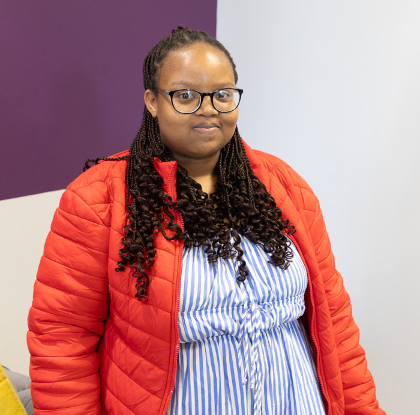

My name is Aphiwe S Msabala, I am a skilled full stack developer with hands-on experience in Python, Java, and modern web technologies, with a growing focus on AI and cloud computing. I build efficient, scalable applications and enjoy creating seamless solutions across both front-end and back-end environments. I’m currently expanding my expertise through Microsoft certifications including AZ-900, AZ-104, AI-900, Azure AI Engineer, and DevOps Expert, equipping me with in-depth knowledge of cloud infrastructure and intelligent systems. Beyond coding, I’m deeply involved in tech community initiatives. I contribute to the All About Tech Foundation, visiting schools to raise awareness about careers in tech, and serve as an program coordinator for KZN Tech Horizon, helping to foster a vibrant tech community in KwaZulu-Natal. I also train models with Outliner, further expanding my experience in AI development. Outside of tech, I enjoy sketching, reading, exploring films, and constantly learning new things. I'm eager to connect, collaborate, and contribute to innovative projects that push boundaries and make a difference.
